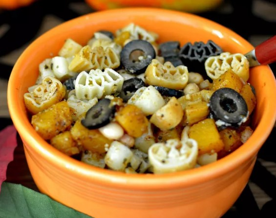

Haloween pasta salad

Ingredients for the pasta
- Pasta of your choice
- 1/4 Butternut squash
- "Bacon" bits
- Almonds
- Garlic powder
- Olive oil
- Black pitted olives
- One red onion
- Handful of fresh dill
- Handful of fresh chives
Ingredients for the sauce
- 1/4 Butternut squash
- One vegan Feta cheese
- 100 ml vegan unsweetened yougurt
- 1tsp dried parsley
- 1tsp dried dill
- 1tsp garlic powder
- 1tsp garlic powder
- Salt and pepper
- Olive oil
- White vinegar
Preparation
- Chop the butternut squash into 1-2 cm cubes and season with olive oil, salt and pepper
- Roast the butternut squash for 30-45 minutes on 180*C and leave to cool
- Boil your pasta as per package instructions
- Roast the almonds with garlic powder, salt and some oil
- Chop your dill, chives, onion
- Blend all sauce ingredients with a hand mixer
- Asemble the pasta with olives, herbs, onion, bacon bits and butternut squash
- Fold in the sauce until nicely covered
- Serve with almonds on top